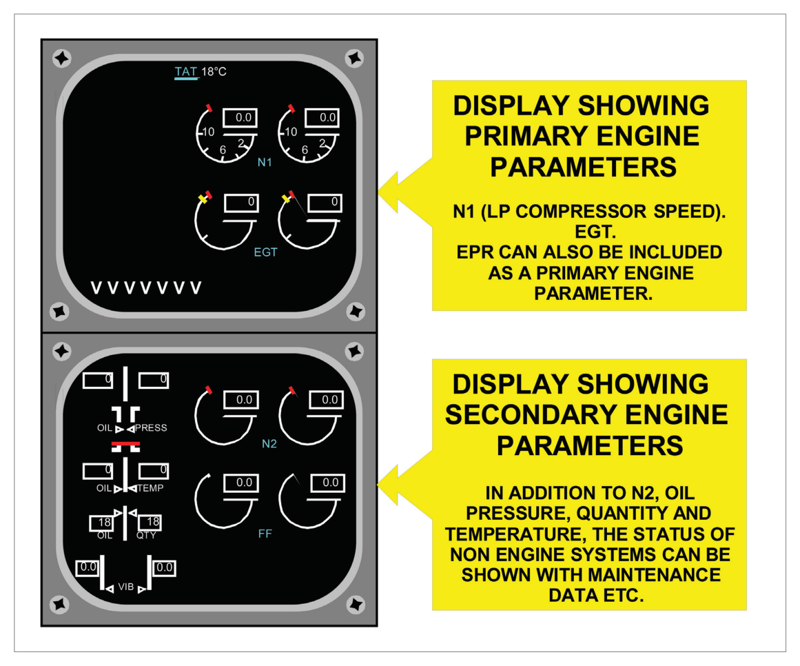
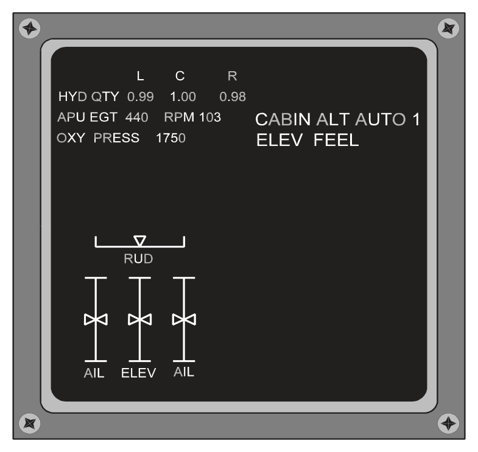
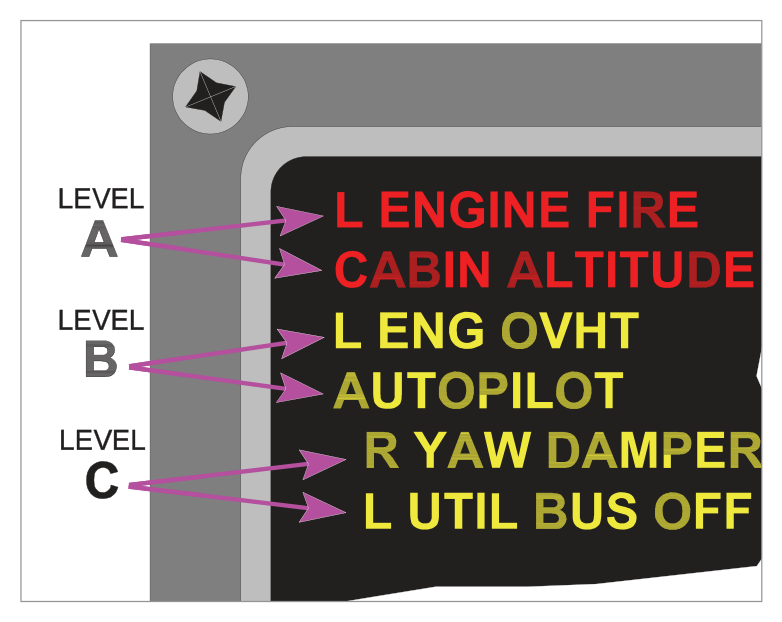
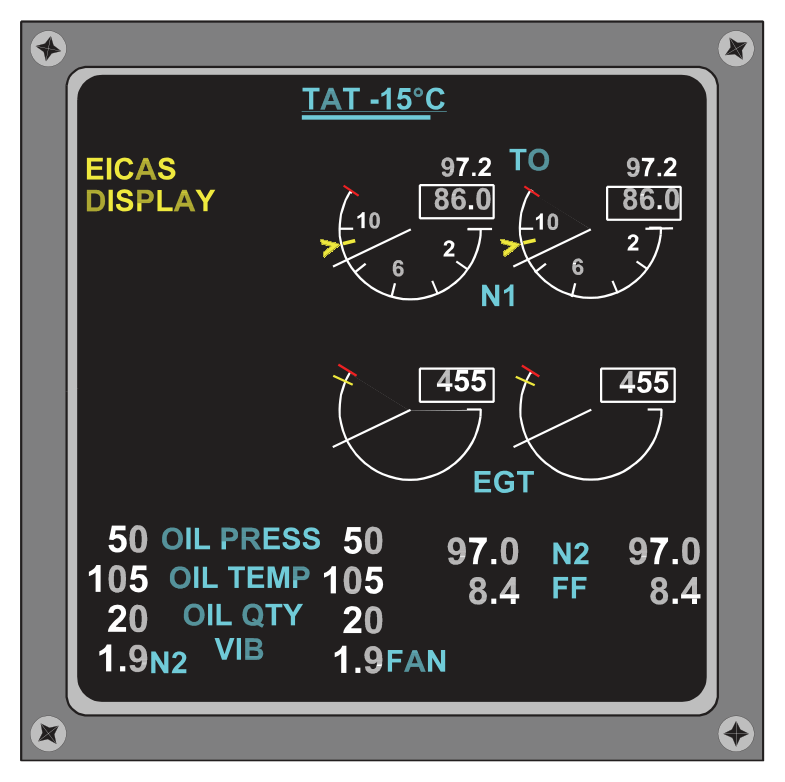
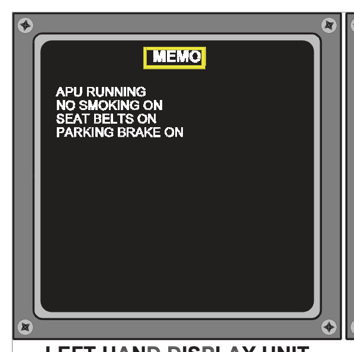
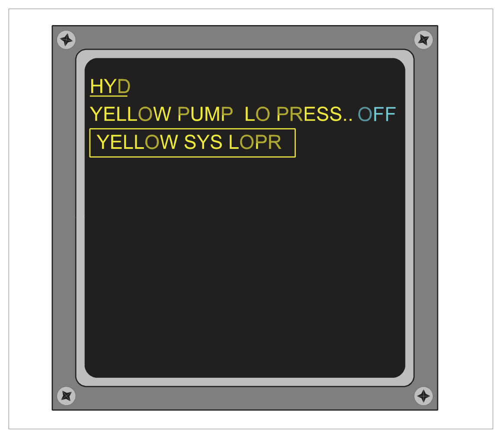
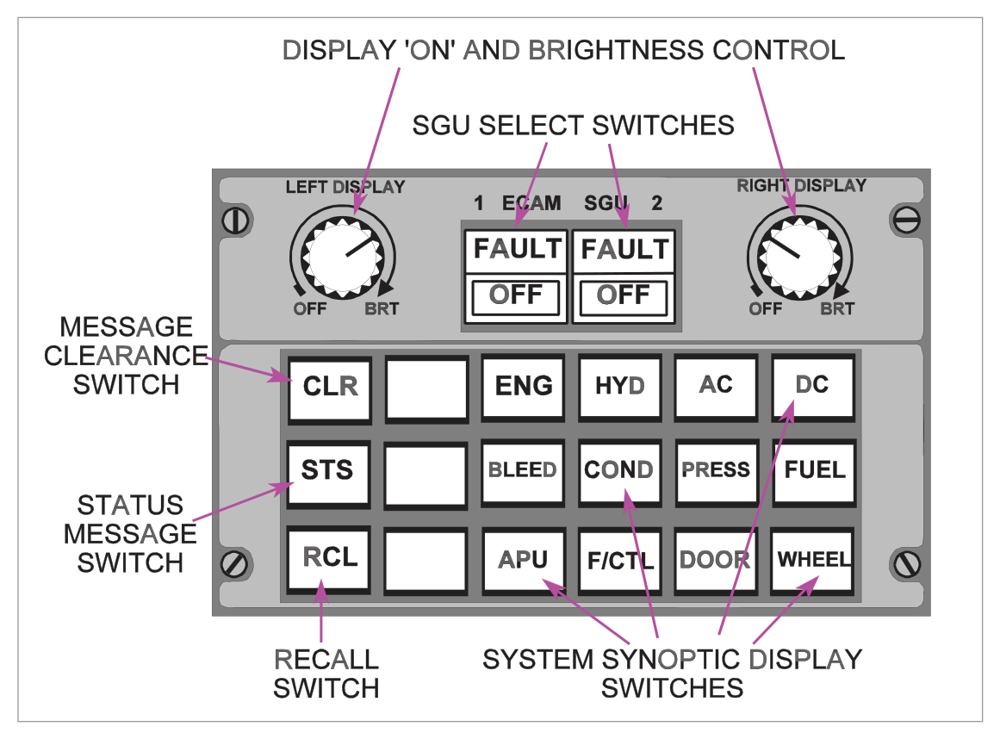

What this section covers: The two principal electronic engine and system monitoring systems used in modern commercial aircraft — their origins and fundamental philosophical differences.
The display of engine performance and airframe systems parameters via CRT or LCD display has become standard on modern aircraft. Two principal systems are in use:
System
Full Name
First Aircraft
Manufacturer
EICAS
Engine Indicating and Crew Alerting System
Boeing 757 and 767
Boeing
ECAM
Electronic Centralized Aircraft Monitoring
Airbus A310
Airbus
Philosophical Difference — EICAS vs ECAM:
Aspect
EICAS
ECAM
Engine data display
Always displayed on screens; eliminates traditional instruments
Originally displayed on conventional instruments (A310); A320 onward: ECAM displays engine data
System display format
Alphanumeric messages and digital/analogue data
Check-list and schematic/synoptic format
Traditional instruments
Eliminated (small standby set retained)
Retained in A310; eliminated in later Airbus types
Exam Tip: The single most testable fact about EICAS vs ECAM is the format: EICAS shows engine data on screen in operational mode; ECAM shows systems in check-list and synoptic/pictorial format. Know the first aircraft for each system.
2. EICAS — System Overview
What this section covers: EICAS hardware components and computer redundancy.
The basic EICAS system comprises:
Two display units (upper and lower)
One control panel
Two computers — designated 'Left' and 'Right'
Only one computer is in control at a time; the other is on standby. In the event of computer failure, the standby can be selected either manually or automatically.
Secondary engine parameters — displayed as required
Warning, caution, and advisory alert messages — displayed as required
3. EICAS — Display Units and Colour Coding
What this section covers: What the upper and lower EICAS display units show, and the meaning of the seven display colours.
The two display units are mounted one above the other and use colour shadow mask CRTs (or LCD equivalents):
Display Unit
Normal Content
Upper Display Unit
Primary engine parameters: N1 speed, EGT, and warning/caution messages. May also show EPR depending on engine type and thrust management system. Shows rows of 'V's when secondary info is on lower unit.
Lower Display Unit
Secondary engine parameters: N2 speed, fuel flow, oil quantity/pressure/temperature, engine vibration. Also: non-engine system status (flight control surface positions, hydraulic, APU, etc.), aircraft configuration, maintenance data. Normally blank in flight.
EICAS Colour Coding (Seven Colours)
Colour
Use
White
All scales, normal operating range of pointers, digital read-outs
Red
Warning messages, maximum operating limit marks, digital read-outs at max limits
Caution and advisory messages; caution limit marks; digital read-outs at caution limits
Magenta
In-flight engine starting; cross-bleed messages
Cyan
Names of all parameters being measured (e.g., N1, oil pressure, TAT); status marks/cues

Fig 39.2 — EICAS engine data displays — upper and lower units (source p.541)
Exam Tip — Colour Memory Aid:
Red = Warnings, max limits (immediate action required)
Amber/Yellow = Cautions and advisories (crew awareness)
Green = Target/selected thrust references
White = Scales and normal readouts
Cyan = Parameter names/labels
Magenta = In-flight engine start / cross-bleed
Blue = Test mode only
4. EICAS — Display Modes
What this section covers: The three EICAS display modes — Operational, Status, and Maintenance.
EICAS has three modes:
flowchart LR
A[EICAS Display Modes] --> B[Operational Mode Selected by flight crew In-flight engine data + alerts]
A --> C[Status Mode Selected by flight crew Dispatch readiness / MEL check]
A --> D[Maintenance Mode Selected on maintenance panel Ground use only — 5 formats]
B --> E[Upper DU active Lower DU blank unless selected]
C --> F[Lower DU shows: control surface positions sub-system data equipment status messages]
D --> G[Lower DU only NOT available in flight]
Mode
Selected By
Purpose
Display Unit
Operational
Flight crew (Display Select Panel)
In-flight engine operating information and alerts requiring crew action
Upper DU (continuously); Lower DU on request
Status
Flight crew (Display Select Panel)
Dispatch readiness; associated with MEL; flight control surface positions; selected sub-system parameters; equipment status messages
Lower DU
Maintenance
Maintenance panel (ground engineers only)
Trouble-shooting and verification testing in 5 display formats
Lower DU — NOT available in flight
Important — Maintenance Mode: This mode is available to ground engineering staff only, via a remotely located maintenance control panel. It is inhibited in flight. It provides 5 different display formats for troubleshooting.
What this section covers: All controls on the EICAS Display Select Panel (DSP), located on the centre pedestal.
Located on the centre pedestal. Usable both in flight and on the ground. Controls include:
Control
Type
Function
Engine Display Switch
Momentary push
Removes or presents secondary information on the lower DU
Status Display Switch
Momentary push
Displays Status Mode (status page) on lower DU
Event Record Switch
Momentary push
Records fault data: automatically (auto event) for malfunctions, or manually (manual event) by crew. Data stored in non-volatile memory; retrievable only on ground via maintenance panel.
Computer Select Switch
Rotary
AUTO = selects left (primary) computer and auto-switches on failure; Manual = left or right selection
Display Brightness Control
Dual knob
Inner = display intensity; Outer = brightness balance between displays
Thrust Reference Set Switch
Pull & rotate inner; outer selects engine
Positions reference cursor on EPR or N1 thrust indicator for selected engine
Maximum Indicator Reset Switch
Pushbutton
Clears exceeded-parameter alerts from display when the excess condition no longer exists

Fig 39.4 — Status Mode Display (source p.543)
6. EICAS — Alert Messages
What this section covers: The three EICAS alert levels, message handling, and Cancel/Recall functions.
EICAS continuously monitors over 400 inputs from engine and airframe sensors. Faults generate messages displayed on the upper DU in urgency order. Up to 11 messages can be displayed simultaneously.
Level
Colour
Name
Action Required
Additional Alerts
Level A
RED
Warning
Immediate corrective action
Master Warning lights illuminated; aural warning (e.g., fire bell) from central warning system
Level B
AMBER
Caution
Immediate crew awareness + future crew action
Message caution lights; aural tone repeated twice
Level C
AMBER (indented)
Advisory
Crew awareness only
No caution lights or aural tones
Advisory vs Caution Distinction: Both are displayed in amber. The advisory (Level C) is always indented one space to the right to differentiate it from the caution (Level B).
Message Management
Action
Effect
CANCEL switch
Removes only caution and advisory messages; Warning messages cannot be cancelled
RECALL switch
Brings back cancelled caution/advisory messages; word 'RECALL' appears at bottom of display
Message auto-removal
When associated condition no longer exists, message automatically removed; lower messages move up
New fault insertion
New message inserted at appropriate line; older messages move down one line
More than 11 messages
Excess messages form a 'page'; lowest message replaced by page number (white, lower right). Press CANCEL to see next page; warnings carried over.

Fig 39.5 — Alert message levels and display (source p.544)
7. EICAS — Display Unit Failure
What this section covers: What happens when the lower EICAS display unit fails.
If the lower display unit fails while secondary information is displayed:
An amber alert message appears at the top left of the upper DU
Secondary information is transferred to the upper DU in 'compact' format
The compact format can be removed by pressing the 'ENGINE' switch on the display select panel
The STATUS switch is inhibited — the status page cannot be displayed while the lower DU has failed

Fig 39.6 — 'Compact format' displayed on upper DU following lower DU failure (source p.545)
8. EICAS — Standby Engine Indicator
What this section covers: The standby instrument that provides engine information if total EICAS display loss occurs.
The Standby Engine Indicator provides primary engine information in the event of a total loss of EICAS displays. It displays:
N1 speed
N2 speed
EGT
Displayed using LCD type indicators. Operating limit values are also shown.
What this section covers: ECAM architecture, how it differs from EICAS in both hardware and philosophy, and the role of each display unit.
The ECAM system as originally developed for the Airbus A310 processes and displays data primarily related to primary systems of the aircraft in check-list and synoptic/pictorial format. Engine data was displayed by conventional instruments in the A310; the A320 onward integrates engine data into ECAM.

Fig 39.8 — ECAM system functional diagram (source p.547)
Display Unit Layout and Roles
Display Unit
Location
Content
Left-hand DU
Side-by-side
Status of systems, warnings, corrective action — in sequenced check-list format
Right-hand DU
Side-by-side
Associated information in pictorial or synoptic (schematic) format
Critical EICAS vs ECAM Layout Difference:
EICAS: Displays mounted one above the other (upper and lower)
ECAM: Displays mounted side by side (left and right) — though some installations differ
10. ECAM — Display Modes
What this section covers: The four ECAM display modes — three automatic and one manual.
ECAM has four display modes — three automatic and one manual:
flowchart TD
A[ECAM Display Modes] --> B[1. Flight Phase-related AUTOMATIC Normal operations]
A --> C[2. Advisory — Mode and Status AUTOMATIC Status summaries]
A --> D[3. Failure-related AUTOMATIC — highest priority Takes precedence over all other modes]
A --> E[4. Aircraft System Display MANUAL Crew-selected via illuminated push-buttons]
D --> F[Left DU: corrective action Right DU: system diagram + Aural warning + Warning light]
E --> G[Selects any of 12 systems for routine checking]
Mode 1 — Flight Phase-related
Automatically selects displays appropriate to the current phase of aircraft operation: preflight, take-off, climb, cruise, descent, approach, after landing.
Left DU: Advisory memo mode
Right DU: Aircraft diagram (fuselage, doors, escape slide arming status, etc.)
Takes precedence over all other automatic modes AND the manual mode. When a failure occurs:
Right DU: immediately displays a diagram of the affected system
Left DU: displays corrective action for the crew
Additional: aural warning sounded; warning light on central warning panel illuminated
As corrective action is taken, left DU instructions are replaced by a white confirmation message
The right DU diagram is 'redrawn' to reflect the new configuration
Single vs Multiple System Failure — ECAM Display:
Single system failure: system title is underlined
Failure affecting other sub-systems: system title is shown boxed
Warnings and lights are cleared using 'CLEAR' (CLR) push-button switches on the ECAM control panel or warning light display panel.

Fig 39.12 — Display showing how a failure affects a sub-system (boxed title) (source p.550)
Mode 4 — Aircraft System Display (Manual)
Permits selection of diagrams related to any one of 12 aircraft systems for routine checking. Also permits selection of status messages when no warnings are active. Selected via illuminated push-button switches on the ECAM system control panel.
11. ECAM — Control Panel
What this section covers: All switches on the ECAM Control Panel.
Switch
Function
SGU Selector Switches
Control respective Symbol Generator Units (SGUs). Lights off in normal operation. FAULT caption (amber) = SGU internal self-test failure. Releasing switch: isolates SGU, FAULT extinguishes, OFF caption illuminates white.
Synoptic Display Switches
Individually select synoptic diagrams for each of 12 systems; illuminate white when pressed. Automatically cancelled when a warning or advisory occurs.
CLR (Clear) Switch
Illuminates white when a warning or status message is on left DU. Press to clear messages.
STS (Status) Switch
Manual selection of aircraft status message (only when no warning displayed); illuminated white. Also causes CLR to illuminate. Suppressed if warning occurs or CLR is pressed.
RCL (Recall) Switch
Recalls previously cleared warning messages IF the failure condition still exists. Causes CLR to illuminate. If failure no longer exists: 'NO WARNING PRESENT' displayed on left DU.

Fig 39.13 — ECAM Control Panel (source p.551)
Quick Revision Summary — Ch. 39:
EICAS: Boeing. Two DUs (upper/lower). 3 modes (Operational, Status, Maintenance). 3 alert levels (A=Red/Warning, B=Amber/Caution, C=Amber-indented/Advisory). Monitors >400 inputs. Up to 11 messages. Standby: N1/N2/EGT on LCD.
ECAM: Airbus. Two DUs (left/right — side by side). 4 modes (3 automatic + 1 manual). Left DU = checklist/corrective action. Right DU = synoptic/diagram. Failure-related = highest priority. 12 systems in manual mode.
Source Questions: The following questions are taken verbatim from the Oxford source text (pp. 552–553), with answers from the source answer key (p. 554). Explanations are instructor-generated.
Q1.With an Engine Indicating and Crew Alerting System:
the secondary display will show continuously the engine primary instruments
the primary display unit will continuously show the engine primary instruments such as N1, N2, N3 and maybe oil pressure
the primary engine display will continuously show the engine primary instruments such as N1, EGT and maybe EPR
the primary engine instruments are N1, EGT and EPR and are on the primary and secondary display units
Correct Answer: (c) the primary engine display will continuously show the engine primary instruments such as N1, EGT and maybe EPR
Explanation: In EICAS, the upper (primary) display unit shows N1, EGT, and possibly EPR continuously in Operational Mode. The lower (secondary) DU normally remains blank and is selected as needed. See Section 3.
Why the other options are wrong:
(a) — The secondary (lower) DU shows secondary parameters (N2, fuel flow, oil, vibration), NOT primary instruments continuously.
(b) — N2, N3 and oil pressure are secondary parameters shown on the lower DU; they are not the primary display content.
(d) — Primary instruments (N1, EGT, EPR) are on the upper DU only in Operational Mode — not on both DUs simultaneously.
Instructor's Note: Upper DU = N1 + EGT + EPR (if fitted) + alerts = continuous. Lower DU = N2, fuel flow, oil, vibration, status = selected as required. This is the core EICAS architecture to memorise.
Q2.The electronic engine display system with three automatic modes is:
the Electronic Centralized Aircraft Monitor, with the fourth mode manual
the Electronic Centralized Aircraft Monitor, with the fourth mode flight phase related or manual
the Engine Indicating and Crew Alerting System, with the fourth mode manual
the Engine Indicating and Crew Alerting System, with the fourth mode a manual cross-over from the Electronic Centralized Aircraft Monitor System
Correct Answer: (a) the Electronic Centralized Aircraft Monitor, with the fourth mode manual
Explanation: ECAM has four modes: three automatic (Flight Phase-related, Advisory/Status, Failure-related) and one manual (Aircraft System Display). EICAS has three modes total (Operational, Status, Maintenance) — not four. See Section 10.
Why the other options are wrong:
(b) — Flight Phase-related is one of the three automatic modes; it is not an alternative "fourth mode."
(c) — EICAS has only 3 modes (Operational, Status, Maintenance); there is no fourth EICAS mode.
(d) — No such cross-over mode exists.
Instructor's Note: ECAM = 4 modes (3 auto + 1 manual). EICAS = 3 modes (Operational + Status + Maintenance). This is a frequently tested distinction.
Q3.The display modes for the Engine Indicating and Crew Alerting System are:
operational, status and maintenance of which status and maintenance are automatic
flight phase related, advisory and failure related
operational, status and maintenance
operational, flight phase related and status
Correct Answer: (c) operational, status and maintenance
Explanation: EICAS has exactly three modes: (1) Operational, (2) Status, and (3) Maintenance. Modes (1) and (2) are selected by the flight crew on the display select panel. Maintenance mode is selected on the maintenance panel for ground staff. See Section 4.
Why the other options are wrong:
(a) — Partially correct on the mode names but wrong about which are automatic — status and maintenance are NOT automatic (both require selection); operational is the normal/default mode.
(b) — Flight phase related, advisory and failure related are ECAM automatic modes, not EICAS modes.
(d) — Flight phase related is an ECAM mode; not an EICAS mode.
Instructor's Note: EICAS: Operational / Status / Maintenance. ECAM: Flight Phase-related / Advisory-Status / Failure-related / Manual. Don't mix these up — they're a favourite exam crossover trap.
Q4.With an Engine Indicating and Crew Alerting System lower display unit failure:
a compact message will only appear on the upper display unit
a compact message will only appear on the central display unit
a compact message will appear both on the upper display unit and the captain's Electronic Flight Instrument System
a compact message will appear on the upper display unit when the status button is pressed on the control panel
Correct Answer: (a) a compact message will only appear on the upper display unit
Explanation: When the lower DU fails while displaying secondary information, an amber alert appears on the upper DU and the secondary info is transferred to the upper DU in "compact format." This compact display can be removed by pressing the ENGINE switch. The STATUS switch is inhibited while the lower DU is failed. See Section 7.
Why the other options are wrong:
(b) — EICAS has no "central display unit"; it has upper and lower DUs.
(c) — The compact format only appears on the EICAS upper DU, not on the EFIS displays.
(d) — The compact format appears automatically (not when STATUS is pressed); in fact, STATUS is inhibited following lower DU failure.
Instructor's Note: Key facts: compact format → upper DU; STATUS button → inhibited; removal of compact format → press ENGINE switch. Three distinct facts, all examinable.
Q5.With an Electronic Centralized Aircraft Monitoring type of system:
the display units have two control panels and with any system failure the control will be from the port control box only
the left display unit shows warning and corrective action in a check list format
the two display units are only fitted side by side
the left display unit shows the synoptic format and the right or lower unit shows the corrective format
Correct Answer: (b) the left display unit shows warning and corrective action in a check list format
Explanation: In ECAM, the left-hand display unit is dedicated to showing warnings and corrective action in sequenced check-list format. The right-hand unit shows the associated synoptic/pictorial format. See Section 9.
Why the other options are wrong:
(a) — ECAM does not have two control panels with port-only control on failure; this description is inaccurate.
(c) — While the standard ECAM layout is side-by-side, saying "only" is incorrect — some compact installations differ.
(d) — This is exactly backwards: the LEFT DU shows corrective action (checklist); the RIGHT DU shows the synoptic/diagram.
Instructor's Note: ECAM Left = Checklist/Corrective action. ECAM Right = Synoptic diagram. The most common mistake is reversing left and right. Use: Left = Language (text/checklist); Right = Picture (synoptic).
Q6.The Engine Indicating and Crew Alerting System alert messages are shown on the upper display unit in three forms:
Level 'C' are warnings that require immediate corrective action
Level 'A' are cautions that require immediate crew awareness and possible action
Level 'B' are advisories requiring crew awareness
and these messages appear on the top left of the upper display unit
Correct Answer: (d) and these messages appear on the top left of the upper display unit
Explanation: "The messages appear on the top line at the left of the display screen." This is the only true statement among the options. Level A = Warnings (red, immediate action). Level B = Cautions (amber, immediate awareness + future action). Level C = Advisories (amber, indented, awareness only). See Section 6.
Why the other options are wrong:
(a) — Level C is advisory (awareness), NOT warning (immediate action). Level A = warning.
(b) — Level A is a WARNING requiring immediate corrective action — not a caution.
(c) — Level B is a CAUTION (immediate awareness + future action) — not an advisory. Level C = advisory.
Instructor's Note: A = Warning = Red = Immediate action. B = Caution = Amber = Immediate awareness + future action. C = Advisory = Amber indented = Awareness only. Top-left of upper DU. All three: A comes first (most urgent), C last (least urgent, indented).
Q7.The electronic engine display system will have:
one primary and one secondary display unit for an EICAS and a change over selector to change to the ECAM mode if necessary
two display units for ECAM and three display units for EICAS
either EICAS or ECAM but not both
an interconnect to the EFIS symbol generators in an emergency
Correct Answer: (c) either EICAS or ECAM but not both
Explanation: An aircraft is equipped with either EICAS or ECAM — these are competing system concepts from Boeing and Airbus respectively. No aircraft uses both systems simultaneously. The text confirms these are two distinct system philosophies on different aircraft types. See Section 1.
Why the other options are wrong:
(a) — There is no ECAM mode changeover on an EICAS aircraft; they are separate, non-interchangeable systems.
(b) — Both EICAS and ECAM use 2 display units; EICAS does not use 3.
(d) — Neither EICAS nor ECAM is described as having an emergency interconnect to EFIS symbol generators.
Instructor's Note: Boeing = EICAS. Airbus = ECAM. An aircraft has one or the other, never both. This seems obvious but the examiner tests it as a distractor.
Q8.The Electronic Centralized Aircraft Monitor (ECAM) type of system shows a:
checklist format on the left display panel and schematic form always automatically on the right display unit
checklist format on the left display unit and the right, or lower display unit, a diagram or synoptic format
synoptic format on the left display unit and a warning and corrective action display on the right or lower display unit
continuous primary engine display on the primary display unit
Correct Answer: (b) checklist format on the left display unit and the right, or lower display unit, a diagram or synoptic format
Explanation: ECAM: Left DU = checklist/corrective action in check-list format. Right DU = associated synoptic/pictorial/diagram format. The "or lower display unit" wording acknowledges that some compact installations may have vertical rather than side-by-side layout. See Section 9.
Why the other options are wrong:
(a) — "Always automatically" is too absolute; the right DU schematic is related to the specific system/failure being displayed, not continuously shown.
(c) — Reversed: left = checklist, right = synoptic (NOT left = synoptic, right = corrective action).
(d) — Continuous primary engine display is an EICAS feature (upper DU); ECAM did not originally display engine data (A310 used conventional gauges).
Instructor's Note: For ECAM: Left = List (checklist/text). Right = Picture (synoptic/diagram). Memorise this left-right assignment — it is tested multiple times across the question bank.
Q9.The electronic display system that has three automatic modes plus one manual is the:
Explanation: ECAM has four display modes: three automatic (Flight Phase-related, Advisory/Status, Failure-related) and one manual (Aircraft System Display). EICAS has only three modes. The question describes ECAM's 3+1 mode structure. See Section 10.
Why the other options are wrong:
(a) — "Electronic Management and Control Section" is not a real avionics system acronym.
(b) — "Electronic Indication and Fail Safe system" does not exist.
(c) — EICAS (Engine Indicating and Crew Alerting System) has only 3 modes total, not 3+1.
Instructor's Note: 3 auto + 1 manual = ECAM. 3 total = EICAS. This is the most direct way to remember the mode count difference.
Q10.A boxed message shown as an electronic engine display system fault is one that:
affects other sub-systems and is used in the Engine Indicating and Crew Alerting System
does not affect any other system
does not affect any other system and is used in the Engine Indicating and Aircraft Monitor system
affects other sub-systems and is used in the Electronic Centralized Aircraft Monitor type of system
Correct Answer: (d) affects other sub-systems and is used in the Electronic Centralized Aircraft Monitor type of system
Explanation: In ECAM, when a failure affects other sub-systems beyond the primary failure system, the title of the sub-system is shown boxed. A single-system failure is shown with the title underlined (not boxed). This convention is specific to ECAM. See Section 10.
Why the other options are wrong:
(a) — Boxed format is an ECAM convention, not EICAS.
(b) — A fault NOT affecting other systems is shown underlined, not boxed.
(c) — Incorrect on both counts: boxed = affects sub-systems AND it's ECAM (not EIAS).
Instructor's Note: ECAM display conventions: Underlined title = single system fault. Boxed title = fault affects sub-systems. These visual conventions communicate the scope of the failure at a glance.
Q11.An engine fire indication on an electronic engine display is shown:
on the primary display panel in red
on the secondary display panel in amber
on both the Electronic Flight Instrument System and Engine Indicating and Crew Alerting System secondary panels
only on the Flight Management Computer primary panel
Correct Answer: (a) on the primary display panel in red
Explanation: Engine fire is a Level A Warning — the highest urgency. Level A warnings are displayed in red on the upper (primary) display unit of EICAS. Red is used for "Warning messages, maximum operating limit marks." See Section 6.
Why the other options are wrong:
(b) — Secondary DU shows secondary parameters; fire warning (Level A) goes to the upper DU in red, not amber on the lower DU.
(c) — EFIS does not display EICAS engine fire alerts; these systems are separate.
(d) — The FMC primary panel is not an alert display for engine fire warnings.
Instructor's Note: Engine fire = Warning = Level A = Red = Upper DU. The source also notes master warning lights and aural warning (fire bell) are also activated. All three: red message + master warning lights + fire bell.
Q12.An engine electronic system which in normal conditions of flight shows only the primary engine instruments is:
an EICAS system with EPR, EGT and N2 shown on the primary instruments
an ECAM system with the primary engine instruments displayed on the lower screen
an EICAS system with the primary engine instruments displayed on the primary screen, the secondary screen being blank
an ECAM system with the primary engine instruments displayed on the primary screen, the left screen being blank
Correct Answer: (c) an EICAS system with the primary engine instruments displayed on the primary screen, the secondary screen being blank
Explanation: In EICAS Operational Mode, only the upper DU presents information; the lower DU remains blank until selected to display secondary parameters. Primary instruments (N1, EGT, possibly EPR) are shown continuously on the upper (primary) DU. N2 is a secondary parameter, not a primary instrument in EICAS. See Section 4.
Why the other options are wrong:
(a) — N2 is a secondary parameter; EPR+EGT+N1 are primary. Including N2 in primary instruments is incorrect.
(b) — ECAM originally showed engine data on conventional (non-electronic) instruments in A310; the ECAM lower/right DU shows synoptic information, not primary engine instruments.
(d) — In ECAM, the left DU shows warnings/checklist; engine primary instruments are not on an ECAM screen as described. This is EICAS architecture, not ECAM.
Instructor's Note: EICAS Operational Mode: Upper DU = N1 + EGT + EPR (if applicable) = continuous. Lower DU = blank (selected on demand). This "lower blank" is characteristic of EICAS and is a key operational feature to remember.
Master Reference Tables
EICAS vs ECAM — Master Comparison
Parameter
EICAS
ECAM
Manufacturer
Boeing
Airbus
First aircraft
B757/B767
A310
DU layout
Upper / Lower (stacked)
Left / Right (side by side)
Number of modes
3
4 (3 auto + 1 manual)
Mode names
Operational, Status, Maintenance
Flight Phase-related, Advisory, Failure-related, Manual (Aircraft System Display)